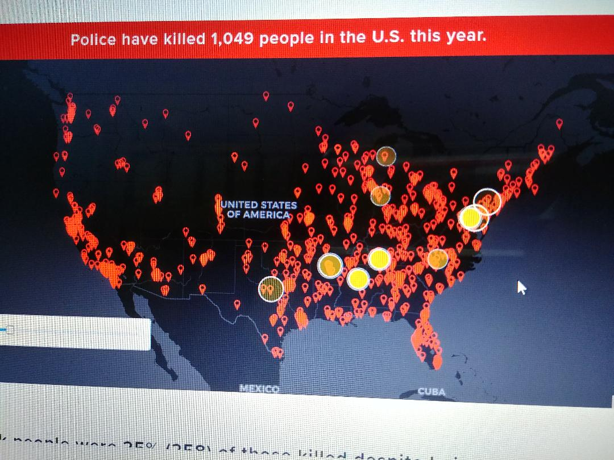
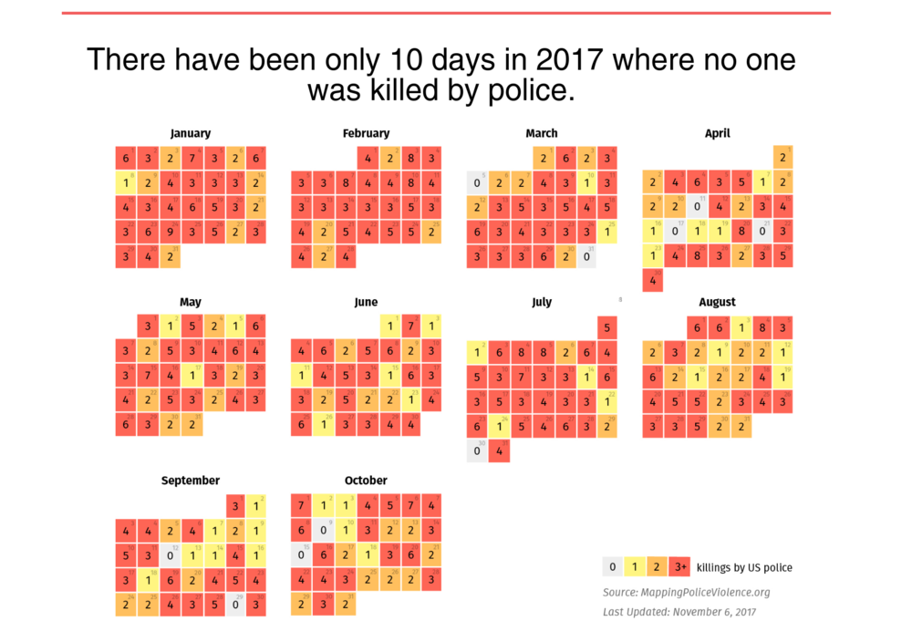
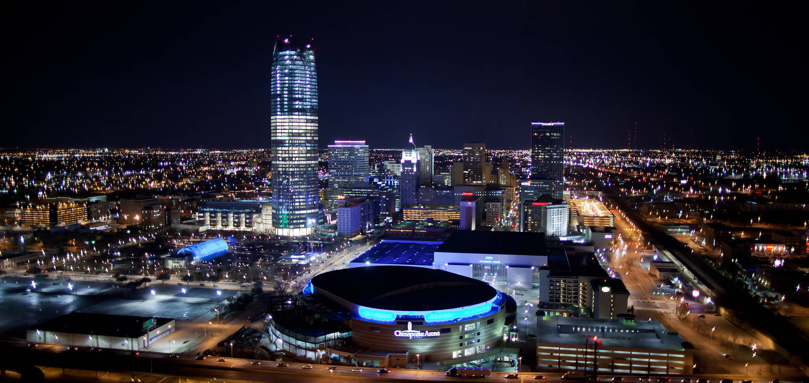
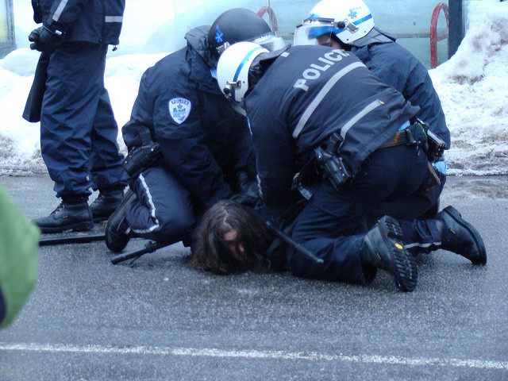
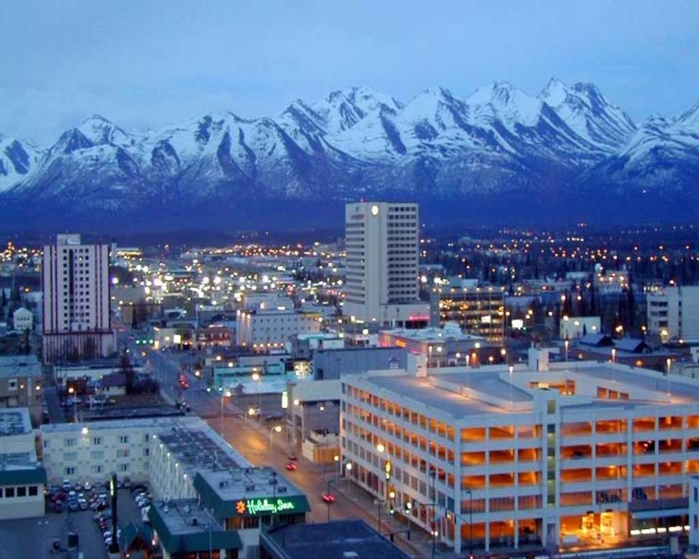
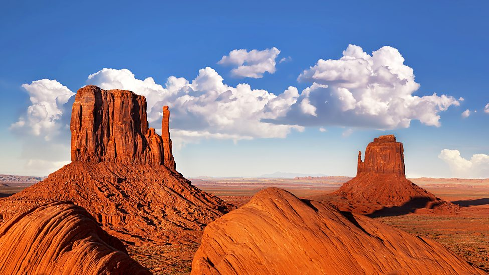

Police Brutality In Numbers
This year, police had killed 1,049 people in the U.S. Most of the people are killed, are from the east side of the U.S.A.


Most people that are killed in one day is 9 and that is January 24. Black people are mostly likely to be killed by police. They are three time more likely to be killed by police than white people, even when they are unarmed.
.jpg)
Oklahoma


Oklahoma is the 28th most population of the 50 states. It came from Choctaw word and it mean "red people." In 2015, there are 32 people are killed by the police. Of those 32 people, four were unarmed and one was armed with a toy weapon.
Alaska

Alaska is located in the northwest of North America. It is right next to Canada, the northwest side. Temperture there is really cold, especailly in the winter. The high temperature in the summer is around 80 degree. From 2013-2017, the number of people that are killed is almost the same as Oklahoma. They has one of the hishest violent crime rates in the U.S. According to the FBI's 2012 crime report, they had like 603 violent crimes out of 100,000.
Utah

Utah is the 45th states and the 31st most population. It is the second fastes growing population of any states and also that is where we get the mine from.